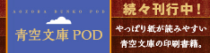

メイン お知らせ 別館 資料 運営
|
|

| | ||
インターネットの電子図書館、青空文庫へようこそ。
初めての方はまず「青空文庫早わかり」をご覧ください。
ファイル利用をお考えの方は、こちらをご一読ください。
ブラウザでは読みにくいと思った方は、「青空文庫のXHTML, TEXTの読み方」をどうぞ。
| メインエリア | |||||||||||||||||||||||||||||||||||||||||||||||||||
|---|---|---|---|---|---|---|---|---|---|---|---|---|---|---|---|---|---|---|---|---|---|---|---|---|---|---|---|---|---|---|---|---|---|---|---|---|---|---|---|---|---|---|---|---|---|---|---|---|---|---|---|
| 青空文庫早わかり | 青空文庫の使い方と約束事を紹介しています。初めての方、ファイルやキャプチャーの取り扱いについて知りたい方も、こちらへどうぞ。 | ||||||||||||||||||||||||||||||||||||||||||||||||||
| 総合インデックス | 作家名、作品名の50音別に、公開作品と入力・校正作業中の作品を一覧できるインデックスです。公開中の作品を探すときは、下の近道もご利用ください。 | ||||||||||||||||||||||||||||||||||||||||||||||||||
| 公開中 作家別： |
あ行
か行
さ行
た行
な行
は行 ま行 や行 ら行 わ行 他 | ||||||||||||||||||||||||||||||||||||||||||||||||||
| 公開中 作品別： |
| ||||||||||||||||||||||||||||||||||||||||||||||||||
| 作業中： | 作家別・作品別 | ||||||||||||||||||||||||||||||||||||||||||||||||||
| 青空文庫 分野別リスト | 分野別に公開作品を一覧できる、インデックスです。 | ||||||||||||||||||||||||||||||||||||||||||||||||||
| お知らせ | |
|---|---|
| 新着情報 | 新規公開作品の一覧表です。随時更新。 |
| 最新公開作品： 11月16日 |
北大路 魯山人 『瀬戸・美濃瀬戸発掘雑感』 『窯を築いて知り得たこと』 |
| そらもよう | 青空文庫からのお知らせを掲載します。 最終更新日：14年11月09日 |
| 青空文庫・別館 | |
|---|---|
| aozorablog | 有志によるブログ。３代目です。まずはのぞいてみてください。 |
| 本の未来基金 | 青空文庫へ寄付をお考えの方は、こちらから。 |
| 資料室 | |||||||||||||||||||||
|---|---|---|---|---|---|---|---|---|---|---|---|---|---|---|---|---|---|---|---|---|---|
| 青空工作員マニュアル | 入力、校正作業の虎の巻です。作業前に、必ず目をとおしてください。 | ||||||||||||||||||||
| 注記一覧 | テキスト版の注記の書き方をまとめています。作業時の友に。 | ||||||||||||||||||||
| 組版案内 | テキスト版をXHTML版に変換できます。プログラムも引き落とせます。 | ||||||||||||||||||||
| 青空文庫ＦＡＱ | 青空文庫についてよくある質問集です。困ったことがあればまずご参照を。 | ||||||||||||||||||||
| 登録全作家インデックス | 登録されているすべての作家について、作品の登録状況、進行状況を確認できます。 | ||||||||||||||||||||
| 著作権が消滅した作家 | 青空文庫への登録が可能な作家のリストです。 | ||||||||||||||||||||
| アクセスランキング | XHTML版、テキスト版の、月間500位を示します。 | ||||||||||||||||||||
| 青空文庫のXHTML, TEXTの読み方 | 青空文庫のファイルを読む方法をご紹介しています。 | ||||||||||||||||||||
| 歩みの記録 |
これまでに公開したそらもようから、一里塚となるような、重要な話題をピックアップしました。
| ||||||||||||||||||||

| 運営について | |
|---|---|
| 青空文庫の提案 | 青空文庫が、どのようなコンセプトでスタートしたかをご紹介しています。 |
| 青空文庫のしくみ | 青空文庫が、どのようなしくみで運営されているかをご紹介しています。 |
| 会計報告 | 青空文庫の台所事情です。 |
| 直面した課題 | 過去に直面した問題点と対応をまとめています。 |
収録作品数：12799（著作権なし：12550、著作権あり：249）
 ←リンクの際にご利用ください。リンクは自由です。
←リンクの際にご利用ください。リンクは自由です。
このページのお問い合わせは、info@aozora.gr.jpまでお願いいたします。